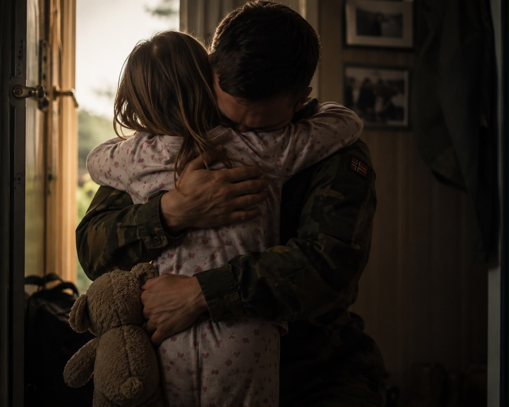

Jeg fikk ikke sove i natt.
Ikke før jeg henta Bamse.
Slitte, gamle Bamse.
Etter alle disse årene hender det fortsatt at jeg finner ham frem.
De nettene jeg føler meg like slitt og fillete som ham.
De nettene jeg ikke vet om jeg makter enda en morgendag.
De nettene føles det tryggere å passe på noe annet enn meg selv.
Men hvorfor er det sånn at jeg føler meg tryggere av å passe på enn å bli passet på?
Jeg lå lenge og tenkte på det i natt.
Hvorfor noen av oss blir så flinke til å passe på andre mennesker.
Hvorfor vi kjenner ansvar for følelsene deres.
Hvorfor vi går på tå hev.
Hvorfor vi tåler litt for mye.
Hvorfor vi glemmer oss selv.
Jeg tror ikke det alltid begynner i voksen alder.
Kanskje begynner det mye tidligere.
Kanskje begynte det allerede da jeg fikk Bamse?
Jeg kunne ikke vært mer enn fem år gammel, kanskje bare fire.
Men jeg skjønner at livet som jeg kjenner det er over.
Jeg klamrer meg fast i broren min.
Kan ikke, vil ikke slippe.
Skjønner ikke hvorfor han skal dra.
Han har stor sekk og uniform.
Han skal i militæret.
Han holder armene bak ryggen sin.
– Hvilken arm?
Jeg peker på den høyre.
Og der var han.
Bamse.
Jeg klamrer meg fast igjen.
Lillemora mi, du må slippe nå, sier han. Stryker bort tårene mine.
– Jeg kommer tilbake.
Det rakner når han drar.
Rommet hans er tomt. Jeg kan ikke tusle inn og legge meg bak ryggen hans når de fester oppe i andre etasje.
Senga er kald.
Tennene mine blir ikke ordentlig rene. Jeg får ikke til å pusse like bra som han.
Det er støy.
Høye rop.
Det er netter jeg er så redd at jeg sniker meg under bordet uten at de merker meg.
Netter jeg sovner til lukten av konjakk og Elvis på vinylspilleren.
Morgener alt jeg finner er skitne glass på bordet, og melka jeg heller oppi skiller seg.
De slutter å krangle.
De begynner å slåss.
Jeg tar med Bamse inn på det kalde rommet.
Jeg holder for ørene hans.
De er store. Jeg bretter dem ned så han ikke hører alt jeg hører.
– Sov nå, jeg passer på deg.
Han river opp døra.
Han er andpusten.
Tar tak i armen min.
– Au, Pappa. Slipp, det svir.
Bamse faller på gulvet. Nå står det ene øret hans rett opp.
Jeg prøver å strekke meg etter ham.
Hun kommer løpende inn, vill i blikket.
Treffer Bamse med foten.
Han ruller videre, stopper heldigvis med ryggen mot meg.
– Shh, det går bra, hvisker jeg.
Hun får tak i den andre armen min.
Neglene borrer seg inn i huden.
De river i meg.
En på hver side.
Jeg tror jeg revner nå.
– Ikke faen om du får henne, hveser han.
– Pass deg, din forbanna jævel. Det var jeg som fødte henne, og jeg skal vie livet mitt til at du aldri ser henne igjen.
Jeg får ikke puste.
Snart revner jeg på midten.
Så står han plutselig der i døråpningen.
– NÅ ER DET NOK. SLIPP HENNE!
Tar tak i meg, løfter meg inntil seg og plukker opp Bamse.
– Nå drar vi herfra, Lillemor.
Han kom tilbake.
Broren min.
Det er rart hvilke ting et barn tar ansvar for.
Ikke seg selv.
En bamse.
Jeg trodde lenge dette minnet handlet om Bamse.
I dag tror jeg det handler om ei lita jente som allerede hadde lært at noen måtte passes på.
At noen måtte skjermes fra det vonde.
Kanskje var det der det begynte.
Kanskje var det derfor jeg senere brukte så mange år på å passe på mennesker som egentlig var for store til å bæres.
Kanskje var det derfor jeg lette etter trygghet alle andre steder enn i meg selv.
Og kanskje var det derfor promillen en stund føltes som trygghet.
For jeg skjønte ikke at det aldri var hennes jobb å holde for ørene til noen.
Ikke sine egne.
Ikke Bamse sine.
